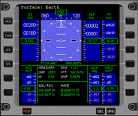
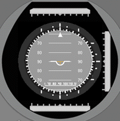
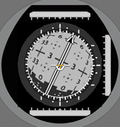
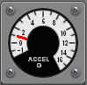
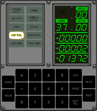

| |
Because you are not able to separate the CSM from the launch vehicle at the moment, the CSM exists only in form of the "apex" of the Saturn V or especially the SIVB stage in orbit. The CSM (as the Saturn V) is the same as in standard NASSP except two components: the panel and the AGC (or CMC in this case).
The panel is the NCPP panel, of course. But in opposite to NCPP almost nothing is working, so it's a little bit like a very extravagant background image. But a few controls are working, otherwise you wouldn't be able to interact with the AGC.

This MFD is not historical correct of course. It's an normal Orbiter MFD like in the Deltaglider and just for user's convenience.

The Attitude Director Indicator is also not historical correct, it's the original NASSP ADI, which is a slightly changed Deltaglider ADI and it showns the attitude in respect to the surface of the current reference body (earth is this case) like the Surface MFD.

The FDAI shows three things simultaneously: the total attitude, the attitude rate and the attitude error in respect to a defined other attitude. At the moment only the total attitude is displayed and there only the IMU gimbal angles. A comprehensive description of the FDAI can be found here: [ApolloOperationsHandbook]. In the following figure you can see how the axises and the rotation directions are defined.
Figure 2. FDAI Diagram[4]


The Accel G meter shows the total acceleration as measured by the PIPA's. This is only almost historical correct because if you look into the [ApolloOperationsHandbook] you will see that in reality it shows the acceleration along the spacecraft X axis. But in any case it shows 1g on the launch pad and not 0g because the Saturn is not weightless on earth!

And last but not least there is the DSKY, the "AGC terminal". With it you interact with the AGC, so it's perhaps the most important element on the panel at the moment. More informations about the DSKY can be found on the [VirtualAGC] website or in the [ApolloOperationsHandbook].
As already mentioned before Virtual Apollo uses the Virtual AGC emulator running the real Apollo flight software, at the moment Colossus 1A, build 249 from October 28, 1968, probably flown with Apollo 8 and 9. You will find comprehensive informations at the [VirtualAGC] website.
| |